# install.packages("ggpubr")Centralitetsanalyse
I denne session skal vi se på hvad centralitet betyder i en netværkssammenhæng.
“in the thick of things”
Lad os installere en ny pakke, hvis ikke den allerede er installeret. Den skal vi bruge senere til at lave pæne opsætninger af vores visualiseringer. Det er ggpubr-pakken, som blandt andet gør det muligt at sætte plotssammen.
Lad os dernæst indlæse de pakker vi skal bruge
library(tidyverse)
library(ggplot2)
library(ggpubr)
library(igraph)
library(ggraph)
library(Matrix)Indlæs data og lav netværksobjekter:
Næste skridt er en række gentagelser (se Session1), hvor vi indlæser og subsetter den17 datasættet.
den <- read_csv("data/den17-no-nordic-letters.csv")
# subset data til kun at indeholde rækker hvor sector == "Corporation"
den_corp <-
den %>% filter(sector == "Corporations")
# subsetter videre data til kun at indeholde linkere, dvs. individer med mere end 1 bestyrelsespost
den_corp <-
den_corp %>%
group_by(name) %>%
mutate(n_memberships = n_distinct(affiliation))
den_corp <- den_corp %>% filter(n_memberships >1) Igen laver vi en biadjacency matrice, \(B_(individ \times virksomhed)\), og udregner de to projektioner:
\(A_(individ \times individ) = B \times B^T\) og
\(A_(organisation \times organisation) = B^T \times B\):
biadj <- xtabs(den_corp, formula = ~name + affiliation, sparse = T)
adj_ind <- biadj %*% t(biadj)
adj_virk <- t(biadj) %*% biadjOg laver to grafobjekter vha. igraph graph_from_adjaceny_matrix()-funktion
# individ netværket
gr_ind <- adj_ind %>% graph_from_adjacency_matrix(mode = "undirected", weighted = TRUE, diag = FALSE)
# virksomheds netværket
gr_virk <- adj_virk %>% graph_from_adjacency_matrix(mode = "undirected", weighted = TRUE, diag = FALSE) I det følgende ser vi nærmere på virksomhedsnetværket… (gr_virk). Lad os først lige se på netværkets komponent-struktur. Hvor mange komponenter består det af? Funktionen components() giver os en liste af resultater, der fortæller os 1) $memberships, dvs. hvilke virksomheder hører til hvilken komponent, 2) $csize hvor mange virksomheder er der i hver komponent og 3) $no, for mange komponenter er der i alt
complist <- components(gr_virk)
complist$csize [1] 773 2 4 2 3 2 4 2 2 2 2 3 2 2 3 3 4 2 2
[20] 2 6 2 2 2 6 2 2 2 2 3 3 2 2 2 2 2 2 3
[39] 3 2 2 3 2 2 2 2 3 2 2 2 2 2 2 2 2 2 2
[58] 2complist$no[1] 58Husk fra sidst at funktionen largest_component() returnerer subgrafen for netværkets største komponent:
largest_comp_virk <- gr_virk %>% largest_component()I næste skridt gemmer vi to netværksvisualiseringer, én af hele netværket med alle komponenter (det plot kalder vi p1) og ét med netværket for den største komponent (det kalder vi p2):
p1 <- gr_virk %>%
ggraph(layout='fr') +
geom_edge_link0(color='grey', width=0.6, alpha=0.45) +
geom_node_point(color='black', alpha=0.6) +
labs(title = paste0("Netværket af virksomheder i \n'Danish Elite Network' (n=", vcount(gr_virk), ")")) +
theme_graph() + theme(plot.title = element_text(family = "serif", size = 12))
p2 <- largest_comp_virk %>%
ggraph(layout='fr') +
geom_edge_link0(color='grey', width=0.6, alpha=0.45) +
geom_node_point(color='black', alpha=0.6) +
labs(title = paste0("Den største komponent (n=", vcount(largest_comp_virk),")")) +
theme_graph() + theme(plot.title = element_text(family = "serif", size = 12))Og med ggarrange() funktionen fra ggpubr kan vi lave et fint sammensat plot med de to plots ved siden af hinanden:
ggarrange(plotlist = list(p1, p2))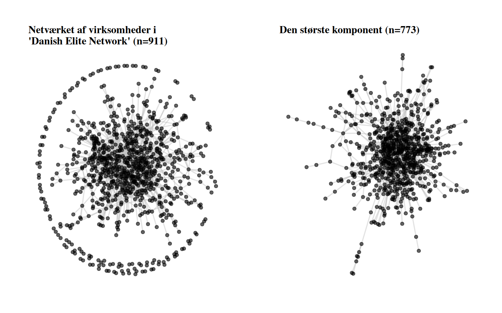
Stier, afstande, centralitetsanalyse i netværk
Afstande, kilometer, distinktion eller stilængder
Vi er vant til at tænke afstand på forskellige måder. Åbenlyst opmåler vi hele tiden den fysiske verden i meter og km, mv. Hvor langt er der på arbejder? I kender formentlig også til den franske sociolog Pierre Bourdieus repræsentation af samfundet som et to-dimensionelt rum. En slags formalisering af noget I også er vant til at tale om og føle, nemlig at vi i hverdagen oplever sociale afstande; direktøren vs professoren vs fabriksarbejderen osv. I netværk har vi også et begreb om afstande. Her tænker vi i stier. Afstanden fra en vertice i et netværk til en anden et det mindste antal af edges vi skal passere igennem for at komme fra den ene til den anden. Selvom netværksvisualiseringen (nedenfor til venstre) placerer A og B visuelt tæt på hinanden er netværksafstanden (den korteste sti) fra A til B seks, mens den korteste sti mellem A og C, der visuelt ligger længere fra hinanden er fem. Det er tre forskellige måder at tænke afstande på (omend de ofte er relateret - men det er en anden historie).
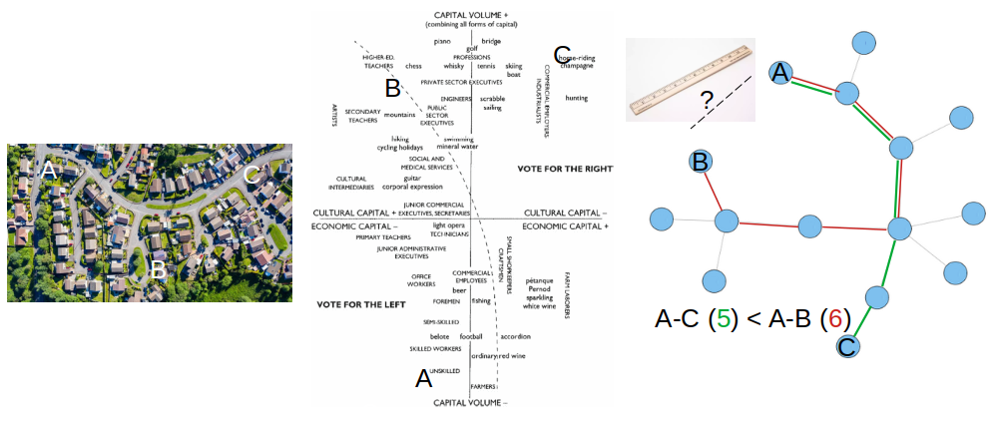
I en forbundet graf (hvor der er en eller flere stier fra alle vertices til alle andre vertices) har alle vertices en defineret afstand til hinanden, nemlig den korteste sti (shortest path eller geodesic path). Når vi har et begreb om afstand i netværk (geodesic distance) kan vi begynder at måle forskellige ting, bl.a. centalitet.
Centralitet generelt
I det følgende skal kigge på en række forskellige måder at konceptualisere centralitet i netværk på. De bygger på forskellige ideer og intuitioner, men har det til fælles at det er måder at undersøge spørgsmålene: Hvem har strukturelt vigtige positioner i et netværk?
Linton C Freeman (1979) påpeger at det idealtypiske billede på centralitet er en såkaldt stjernegraf, hvor en node er forbundet til alle andre, der hver især kun er forbundet til denne:
star <- make_star(10, mode = "undirected")
V(star)$name <- LETTERS[1:10]
star %>% ggraph("kk") +
geom_edge_link0() +
geom_node_label(aes(label = name, size = degree(star)), show.legend = F) +
scale_size_continuous(range = c(3,6)) +
theme_graph(base_family = "serif") + labs(title = "Stjernegraf med 10 noder", caption = "Freeman, Linton C. 1979. “Centrality in Social Networks Conceptual Clarification.” Social Networks 1979(1):215–39.")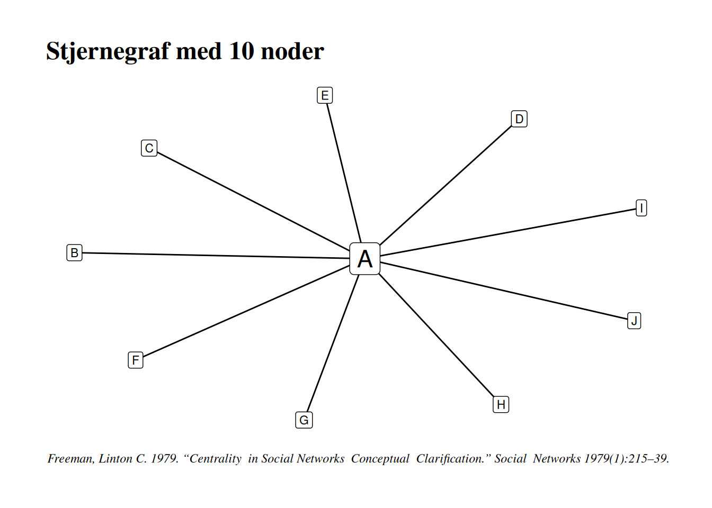
I denne situation er A den mest centrale node, fordi den har flest ‘kontakter’, 9 i alt, hvor de øvrige kun har 1. A’s centralitet kan også udtrykkes i termer af afstande, A er så at sige tættest på de andre node, da A i et led kan nå alle, mens alle andre har skal gå to led for at nå andre end A. Det betyder videre at A også er mest central i den forstand at al ‘kommunikation’ mellem de andre noder nødvendigvis må gå gennem A. Med andre ord: A er den mest populære i ‘klassen’, A har også lettest ved at sprede et budskab (et rygte måske? eller en virus?) og A har også lettest adgang til viden (sladder måske?) da en information for at komme fra B til nogen anden aktør må gå gennem A.
Kontakt baserede centralitetsmål:
En måde at tænke centralitet på er som nævnt kontakter. Antallet af noder en given node er direkte forbundet til kaldes i grafteori, nodens degree. Det kan også beskrives som et lokalt centralitetsmål.
Degree centralitet:
Ide: centralitet kommer til udtryk i høj “aktivitet”, en central aktør er en aktør med mange direkte kontakter.
Praksis: Tæller hvor mange direkte forbindelser hver node har, dvs hvor mange andre noder den er forbundet til.
I et ikke-retningsbestemte netværk (undirected) der kun et degree mål.
I retningsbestemte netværk har hver node en:
‘out degree’ (udadgående forbindelser)
‘in degree’ (indkommende forbindelser)
Total degree (summen af de to).
Lad os udregne degree (med degree() funktionen fra igraph) for noderne i den største komponent:
Beslutning: Hvis netværket er retningsbestemt skal det defineres i funktionen om det er in, out eller total degree vi vil udregne (fx degree(...mode = "in") eller degree(...mode = "out" etc.))
deg <- degree(largest_comp_virk)
table(deg)deg
1 2 3 4 5 6 7 8 9 10 11 12 13 14 15 16 17 18 19 20
105 100 90 77 54 47 40 35 35 21 17 26 16 17 24 16 13 9 5 7
21 23 24 25 26 28 30
5 1 3 3 4 2 1 fordi degree er udregnet på grafobjektet (og derfor er sorteret på samme måde), kan vi uden problemer tilføje vores degree variable som en ny vertex attribute. Det kan vi gøre på to måder: 1) med V(netværksobjekt)$"nyt attribute" <- degree 2) med en funktion set_vertex_attr()
#1)
V(largest_comp_virk)$degree <- deg
#2)
largest_comp_virk <- set_vertex_attr(largest_comp_virk, name = "degree", value = deg)Lad os undersøge hvordan degree fordelingen ser ud (med et histogram) og hvordan degree fordelingen beskriver netværket (med et grafplot):
hist_deg <- deg %>% tibble() %>%
ggplot() +
geom_histogram(aes(x=.), fill = "grey20") + #binwidth definerer, hvor mange kategorier på x-aksen en søje i histogrammet skal 'opsummere'
scale_y_continuous(breaks = seq(0,100, 10), name = "Antal") + scale_x_continuous(breaks = c(1, seq(5,max(deg), 5)), minor_breaks = seq(0,max(deg), 1), name ="Degree") + theme_minimal(base_family = "serif")
p_deg <- largest_comp_virk %>%
ggraph(layout='stress') +
geom_edge_link0(color='grey', width=0.6, alpha=0.45) +
geom_node_point(aes(color=degree), alpha=0.8) +
labs(title = paste0("Den største komponent (n=", vcount(largest_comp_virk),")"), subtitle = "degree", color = "") +
theme_graph() + theme(plot.title = element_text(family = "serif", size = 12), plot.subtitle = element_text(family = "serif", size = 12), legend.position = "bottom")
ggarrange(plotlist = list(hist_deg, p_deg), widths = c(1.4,2))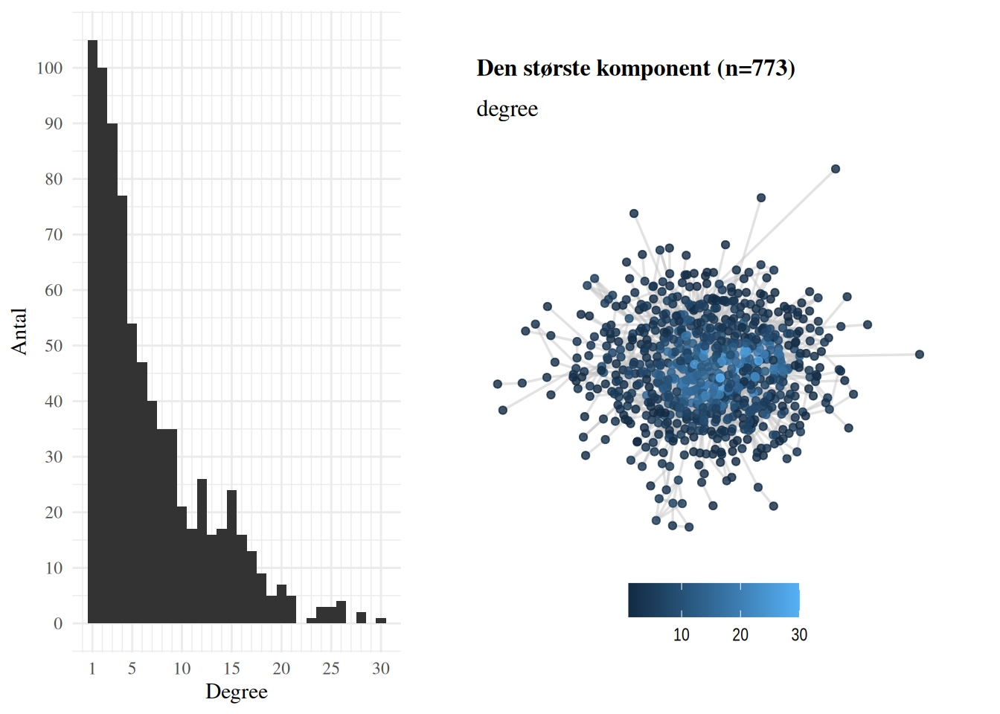
Eigenvector centrality:
Ide: som med degree, det er godt at have mange ‘venner’, men det er endnu bedre, hvis disse venner også er populære!
Praksis: Udregnes hurtigt med ‘kompliceret’ matematik, eigenvector decomposition, deraf navnet. Intuitionen i målet er: Alle noder starter med en ‘vægt’ på 1, for hver node tælles summen af deres forbindelsers ‘vægt’, svarer i første omgang til degree, gentages i flere runder, hvorved noder der er forbundne til velforbundne node, stiger hurtigere (= er mere centrale), skaleres til at være mellem 0 og 1, hvor 0 er isolates og 1, den mest centrale.
Beslutninger: 1) skal edgevægte betyder noget? Hvis vi ikke skriver noget tager den edgeweights med, hvis der er nogen, hvis vi skriver weights = NA tager udregningen ikke hensyn til edgeweights, dvs. alle forbindelser har samme vægt (w=1). 2) er netværket retningsbestemt?
Problemer: Værk opmærksom. Hvis vi har et netværk med en meget ‘skæv’ fordeling af degree, vil der ske det at få meget velforbundne noder, ‘hubs’, vil ‘skabe’ en lokaliseringseffekt på eigevector centralitetn, således at den mest indfanger forskellen på dette hub og resten af netværket. Fordi eigencentraliteten udregnes i skridt, hvor en nodes centralitet afhænger af dens ‘naboer’ centralitet. I næste runde vil en nodes egen centralitet så at sige blive reflekteret tilbage i kraft af dens naboer (som jo nu har ‘lånt’ dennes osv.) - et feedback loop, der kan skabe en situation hvor al centralitet samles omkring et hub og centraliteten for resten af netværket går mod 0. Er det en korrekt beskrivelse af centraliteten af forskellige aktører?
eig <- eigen_centrality(largest_comp_virk, weights = NA, directed = FALSE)
str(eig)List of 3
$ vector : Named num [1:773] 0.00272 0.00445 0.0023 0.012 0.48501 ...
..- attr(*, "names")= chr [1:773] "3C Groups" "3xN" "5E Byg (Bestyrelse)" "7N" ...
$ value : num 14.8
$ options:List of 20
..$ bmat : chr "I"
..$ n : int 773
..$ which : chr "LA"
..$ nev : int 1
..$ tol : num 0
..$ ncv : int 0
..$ ldv : int 0
..$ ishift : int 1
..$ maxiter: int 3000
..$ nb : int 1
..$ mode : int 1
..$ start : int 1
..$ sigma : num 0
..$ sigmai : num 0
..$ info : int 0
..$ iter : int 4
..$ nconv : int 1
..$ numop : int 50
..$ numopb : int 0
..$ numreo : int 40eig <- eig$vectorlad os igen gemme eigencentraliteten som en vertex attribute
V(largest_comp_virk)$eigencentrality <- eigog plotte fordelingen og netværket
hist_eig <- eig %>% tibble() %>%
ggplot() +
geom_histogram(aes(x=.), fill = "grey20") +
scale_y_continuous(name = "Antal") + scale_x_continuous(breaks = seq(0,max(eig), .1), name ="Eigencentralitet") +
theme_minimal(base_family = "serif")
p_eig <- largest_comp_virk %>%
ggraph(layout='stress') +
geom_edge_link0(color='grey', width=0.6, alpha=0.45) +
geom_node_point(aes(color=eigencentrality), alpha=0.8) +
labs(title = paste0("Den største komponent (n=", vcount(largest_comp_virk),")"), subtitle = "Eigencentrality", color = "") +
theme_graph() + theme(plot.title = element_text(family = "serif", size = 12), plot.subtitle = element_text(family = "serif", size = 12), legend.position = "bottom")
ggarrange(plotlist = list(hist_eig, p_eig), widths = c(1.4,2))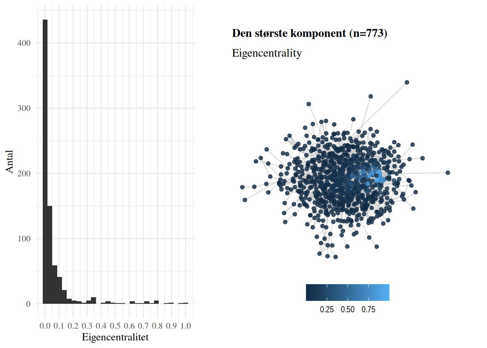
Centralitetsmål baseret på indirekte forbindelser (stier):
En anden gruppe af centralitetsmål er mere fokuseret på den strukturelle position i hele netværket og bygger på en antagelse om at selvom den enkelte aktør ikke ‘kender’ sine indirekte forbindelser, har positionen i netværkets globale strutkru stadig betydning for adgangen til fx information eller indflydelse osv. Det vi kigger på med disse mål er ikke længere direkte forbindelser, men afstande mellem aktører målt som korteste stier (minimum antal edges der skal passerer for at komme fra A til B).
Beslutninger: 1) skal stilængderne i netværket vægtes i udregningen (i kraft af edge weights), hvis vi ikke skriver noget influerer evt. edge-weights på stilængderne (hvis der er en weight attribute i grafobjektet), skriver vi weights = NA ignoreres edge weights så alle edges har samme vægt (w = 1)
Excentricitets centralitet:
Ide: Et netværk har yderpunkter, dvs. noder der er længst fra hinanden. De siges at ligge i periferien og deres afstand er derfor netværkets diameter. Den/de noder der har den korteste afstand deres fjerneste node, kalder vi centrum i netværket, og afstanden til periferien, radius.
Praksis: En nodes eccentricitet er deres maksimale afstand (korteste sti) til en anden node.
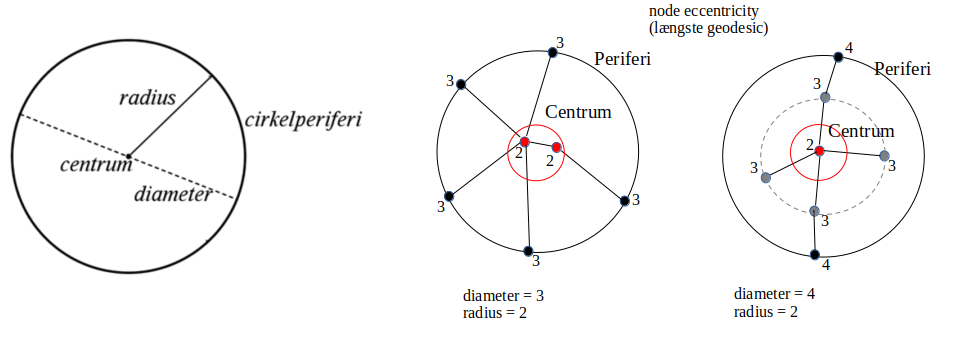
Det er almindeligt at bruge den inverse eccentricitet (dvs \(1 \over eccentricity\)) som centralitetsmål, så perifære noder får et lavere tal og centrale noder et højre.
ecc <- 1 / eccentricity(largest_comp_virk, weights = NA)lad os igen gemme eccentricity centraliteten som en vertex attribute i vores grafobjekt:
V(largest_comp_virk)$eccentricity <- eccog kigge på fordelingen og netværket
hist_ecc <- ecc %>% tibble() %>%
ggplot() +
geom_histogram(aes(x=.), fill = "grey20") +
scale_y_continuous(name = "Antal") + scale_x_continuous(breaks = seq(0,max(ecc), .01), name ="1/Eccentricity") +
theme_minimal(base_family = "serif")
p_ecc <- largest_comp_virk %>%
ggraph(layout='stress') +
geom_edge_link0(color='grey', width=0.6, alpha=0.45) +
geom_node_point(aes(color=eccentricity), alpha=0.8) +
labs(title = paste0("Den største komponent (n=", vcount(largest_comp_virk),")"), subtitle = "1/Eccentricity", color = "") +
theme_graph() + theme(plot.title = element_text(family = "serif", size = 12), plot.subtitle = element_text(family = "serif", size = 12), legend.position = "bottom")
ggarrange(plotlist = list(hist_ecc, p_ecc), widths = c(1.4,2))`stat_bin()` using `bins = 30`. Pick better value with `binwidth`.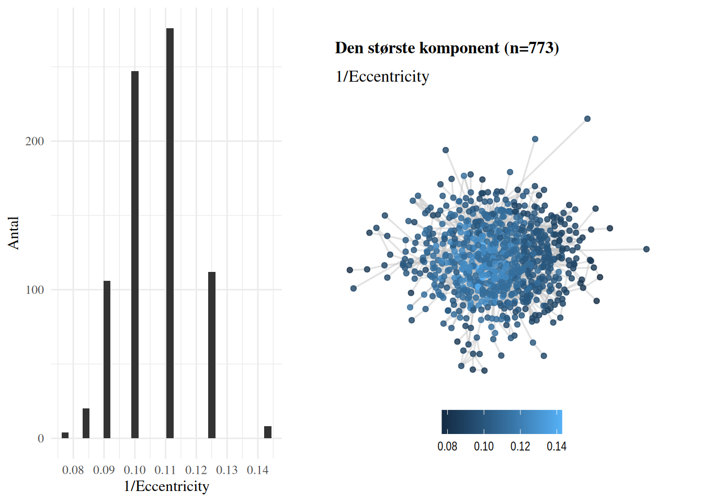
Closeness centralitet:
Ide: en central netværks-aktør er en der (i gennemsnit) er tæt på de andre i netværket. En der hurtigt kan række ud i netværket og derfor har en grad af uafhængighed. Hvor eccentricitet måler hvor langt der er til den fjerneste nabo, måler closeness i stedet hvor langt der i gennemsnit er til alle naboer.
I praksis: udregnes (for node A) som: summen af A’s netværksafstand (shortest path) til alle andre noder / antallet af noder (udover A selv). Det svarer til den gennemsnitlige afstand til netværkets andre aktører. Almindeligvis bruges den inverse gennemsnitsafstand som centralitetsmål (det er også det mål igraph producerer), så et lavt tal betyder lav centralitet og et højt tal en ‘højere’ centralitet.
clo <- closeness(largest_comp_virk, weights = NA) Igen, lad os gemme closeness centraliteten i vores grafobjekt som en vertex attribute:
V(largest_comp_virk)$closeness <- cloog producere det samme overblik over fordelingen og netværket:
hist_clo <- clo %>% tibble() %>%
ggplot() +
geom_histogram(aes(x=.), fill = "grey20") +
scale_y_continuous(name = "Antal") + scale_x_continuous(name ="Closeness") + theme_minimal(base_family = "serif")
p_clo <- largest_comp_virk %>%
ggraph(layout='stress') +
geom_edge_link0(color='grey', width=0.6, alpha=0.45) +
geom_node_point(aes(color=closeness), alpha=0.8) +
labs(title = paste0("Den største komponent (n=", vcount(largest_comp_virk),")"), subtitle = "Closeness", color = "") +
theme_graph() + theme(plot.title = element_text(family = "serif", size = 12), plot.subtitle = element_text(family = "serif", size = 12), legend.position = "bottom")
ggarrange(plotlist = list(hist_clo, p_clo), widths = c(1.4,2))`stat_bin()` using `bins = 30`. Pick better value with `binwidth`.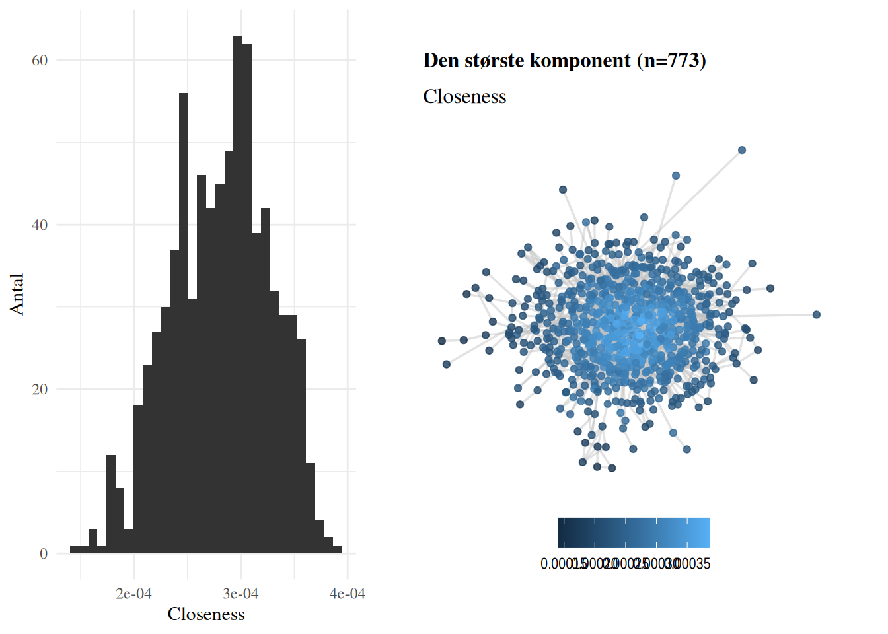
Betweenness centralitet:
Hvis vi i stedet for at kigge på afstanden til alle andre, kigger på hvor hyppigt en aktør ligger på den korteste sti mellem andre noder, så får vi et bud på hvor nødvig en given aktør er for at ‘noget’ (kommunikation/sladder/viden etc.) kan flyde mellem de andre aktører
Ide: En central node er en der er uundværlig for at andre noder, der ikke er direkte forbundne, kan ‘nå’ hinanden, dvs. én der bygger bro, én gatekeeper osv.
I praksis (for en given node, A): tæller antallet af korteste stier, parvist, mellem alle andre noder, der går igennem A.
bet <- betweenness(largest_comp_virk, weights = NA) V(largest_comp_virk)$betweenness <- bethist_bet <- bet %>% tibble() %>%
ggplot() +
geom_histogram(aes(x=.), fill = "grey20") +
scale_y_continuous(name = "Antal") + scale_x_continuous(name ="Betweenness") + theme_minimal(base_family = "serif")
p_bet <- largest_comp_virk %>%
ggraph(layout='stress') +
geom_edge_link0(color='grey', width=0.6, alpha=0.45) +
geom_node_point(aes(color=betweenness), alpha=0.8) +
labs(title = paste0("Den største komponent (n=", vcount(largest_comp_virk),")"), subtitle = "Betweenness", color = "") +
theme_graph() + theme(plot.title = element_text(family = "serif", size = 12), plot.subtitle = element_text(family = "serif", size = 12), legend.position = "bottom")
ggarrange(plotlist = list(hist_bet, p_bet), widths = c(1.4,2))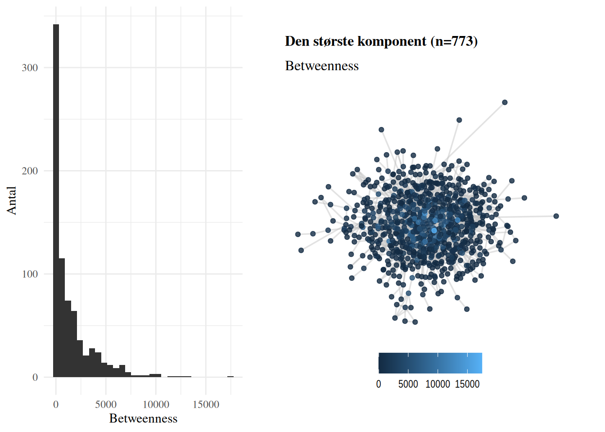
Opsummering:
Nu har vi set på en række forskellige centralitetsmål, der teoretisk/konceptuelt indfanger forskellige aspekter af, hvad det vil sige at være centralt placeret i en netværks struktur:
| Centralitetsmål | Igraph() |
edge vægte? | retningsbestemt? | normalisering? |
|---|---|---|---|---|
| degree centralitet | degree() |
hvis ja: mode ="in", "out" eller "all" |
normalized = TRUE eller FALSE |
|
| eigenvector centralitet | eigen_centrality() |
weights = NA ignorerer vægte |
directed = TRUE eller FALSE |
altid normaliseret |
| eccentricity centralitet | 1 / eccentricity() |
weights = NA ignorerer vægte |
hvis ja: mode ="in", "out" eller "all" |
normalized = TRUE eller FALSE |
| closeness centralitet | closeness() |
weights = NA ignorerer vægte |
hvis ja: mode ="in", "out" eller "all" |
normalized = TRUE eller FALSE |
| betweenness centralitet | betweenness() |
weights = NA ignorerer vægte |
directed = TRUE eller FALSE |
normalized = TRUE eller FALSE |
Lad os samle alle centralitetsmålene, som nu ligger som vertex attributes i vores grafobjekt, i en data.frame med igraph-funktionen as_data_frame()
cent_metrics <- as_data_frame(largest_comp_virk, what = "vertices") %>% tibble()Centralitetsrank
Det kan være en god ide at lave en rankvariabel for de forskellige mål, som ranker alle noder efter deres centralitet på de forskellige mål. Funktionen dense_rank() kombineret med desc() (descending) giver os et rank hvor noden med den højeste centralitet bliver nr 1 og de andre noder, 2,3,4,5 osv. jo lavere deres centralitet er. Det gør det lidt lettere at overskue, hvor en bestemt node er placeret på de forskellige centralitetsmål.
Når vi skriver i stedet for at skrive koden for hver eneste centralitets mål kan vi bruge funktionen across() inde i mutate() det betyder at vi i denne sammen hæng gør ‘noget’ henover alle kolonner undtagen name .cols = -name, det vi gør er en funktion .fns = som er (~ betyder her funktion) dense_rank(desc(.x)) (hvor .x betyder elmeneterne i .cols, altså for hver af kolonnerne der ikke er name), det sidste udtryk vi skriver i across funktionen er hvad der skal ske med variablene. Hvis vi ikke skriver noget her, overskriver vi de gamle variable. Hvis vi som nedenfor skriver .names = "{.col}_rnk" betyder det at vi laver nye variable der kommer til at hedde det samme som de gamle "{.col}" + _rnk. Dvs. rangeringen af degree bliver til ny variabel degree_rnk.
cent_metrics_rnk <- cent_metrics %>% mutate(across(.cols = -name, .fns = ~dense_rank(desc(.x)), .names = "{.col}_rnk"))Måler de forskellige centralitetsmål i realiteten noget forskelligt?
Jeg har skrevet en plot-funktion der ligger i networkfunctions.R som kan downloads her:
eller hentes på kursets hjemmeside.
Hvis I lægger den i functionsmappen i rprojekt-mappen, kan i source den som med andre scripts:
source("functions/networkfunctions.R", echo = FALSE)med cor_plots() funktionen kan vi lave et hurtigt plot, der viser korrelationen mellem de f orskellige centralitetsmål:
Vi kan lige normalisere alle målene, så de går fra 0 til 1 det gør vi ved at dividere alle med max (for dem der allerede er normaliseret betyder det ingen ting da x/1 jo er x). Undtagen selvfølgelig name variablen (så den skipper vi i across funktionen across(.cols = -name, ...))
cent_metrics_norm <- cent_metrics %>% mutate(across(.cols = -name, .fns = ~.x / max(.x))) I cor_plots() skal I huske at skrive hvilken variabel i jeres dataobjekt, der er en navne-variabel (som default leder den efter “name” eller “affiliation”). Der er også mulighed for at sætte en plot.title, (default er “Korrelationer mellem centralitetsmål”) og en title.size (default er 12):
cent_metrics_norm %>% cor_plots(., name_var = "name")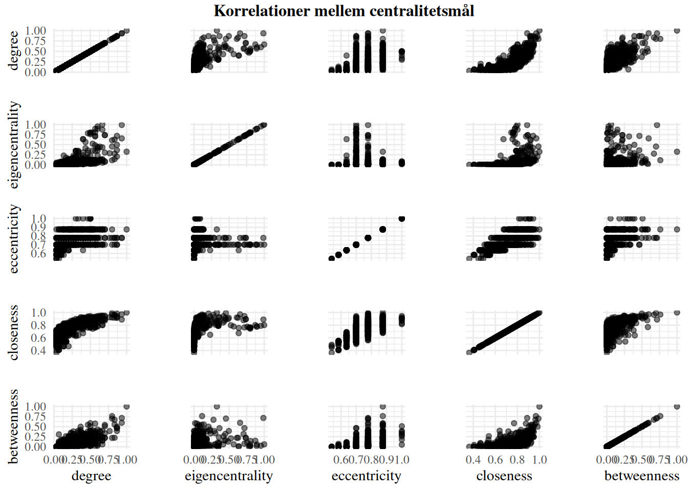
og vi kan se de parvise correlationer mellem målenen (vi ‘smider’ igen name-variablen ud select(-name))
cent_metrics_norm %>% select(-name) %>% cor(, method = "kendall") degree eigencentrality eccentricity closeness betweenness
degree 1.0000000 0.5928230 0.4545670 0.6668908 0.6239287
eigencentrality 0.5928230 1.0000000 0.3014156 0.7061785 0.3941629
eccentricity 0.4545670 0.3014156 1.0000000 0.5468315 0.4254326
closeness 0.6668908 0.7061785 0.5468315 1.0000000 0.5194376
betweenness 0.6239287 0.3941629 0.4254326 0.5194376 1.0000000Konklussion: De er allesammen korrelerede til hinanden i forskellige grad, men slet ikke perfekt, da de udtrykker forskellige aspekter af hvad det vil sige at være central i et netværk:
 Fig fra: fra: Ortiz-Arroyo, Daniel. 2010. “Discovering Sets of Key Players in Social Networks.” pp. 27–47 in Computational Social Network Analysis, Computer Communications and Networks, edited by A. Abraham, A.-E. Hassanien, and V. Snásel. London: Springer London.
Fig fra: fra: Ortiz-Arroyo, Daniel. 2010. “Discovering Sets of Key Players in Social Networks.” pp. 27–47 in Computational Social Network Analysis, Computer Communications and Networks, edited by A. Abraham, A.-E. Hassanien, and V. Snásel. London: Springer London.
Degree: ‘simpel’ popularitet, dvs. hvem har flest forbindelser. Closeness: effektiv spreder af information, da høj closeness betyder at resten af netværket er relativt tilgængeligt for denne node. Betweennes: kontrol med information, høj betweenness betyder at en stor del af det, der ‘flyder’ mellem noder i netværket går gennem denne node.
Jo mere et netværk ‘ligner’ en stjernegraf eller dvs. jo mere kerne-periferi agtig netværksstrukturen er desto mere vil de forskellige centralitetsmål korrelere. Fordi de måler den samme underliggende kerneperiferistruktur.
Kerne/periferi struktur:
Coreness eller K-core decomposition
En anden måde at tænke centralitet på, med udgangspunkt i netværkets kerne/periferi struktur
ide: Første lag K=0: Alle noder; Andet lag K=1 alle noder med < 1 forbindelse slettes; næste lag K=2 alle noder der nu har <2 forbindelser slettes; K=3 alle noder der nu har <3 forbindelser slettes osv. indtil man ikke kan slette noder uden at antallet af de reterende noders forbindelser falder….
core <- coreness(largest_comp_virk)
table(core)core
1 2 3 4 5 6 7 8 9 11
124 122 126 97 81 71 53 27 57 15 Lad os prøve at visualisere logikken med en funktion fra networkfunctions.R
coreness_viz(largest_comp_virk, algorithm = 'kk') 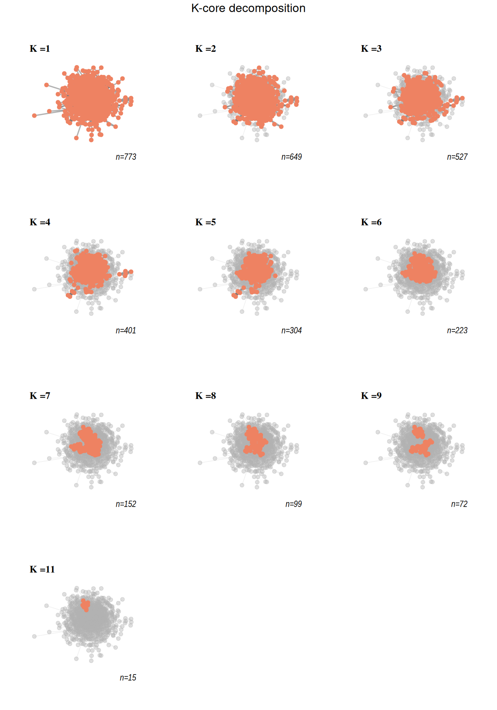
lad os lige tilføje coreness til vores cent_metrics data og til grafobjektet
cent_metrics <- cent_metrics %>% mutate(coreness = core)
V(largest_comp_virk)$coreness <- coreVisualiernger af netværk
Visualisering af eccentriciteten
largest_comp_virk %>% ggraph(layout='stress') +
geom_edge_link0(color='grey', width=0.6, alpha=0.35) +
geom_node_point(aes(color=eccentricity, size = eccentricity, alpha = eccentricity), show.legend = F) +
theme_graph() + scale_color_viridis(direction = -1) + labs(color="1/Eccentricity") +
geom_node_label(aes( filter=name %in% {cent_metrics %>% filter(eccentricity %in% c(min(eccentricity), max(eccentricity))) %>% pull(name)}, label=name), alpha=0.65, size = 3, repel=T, force = 10) 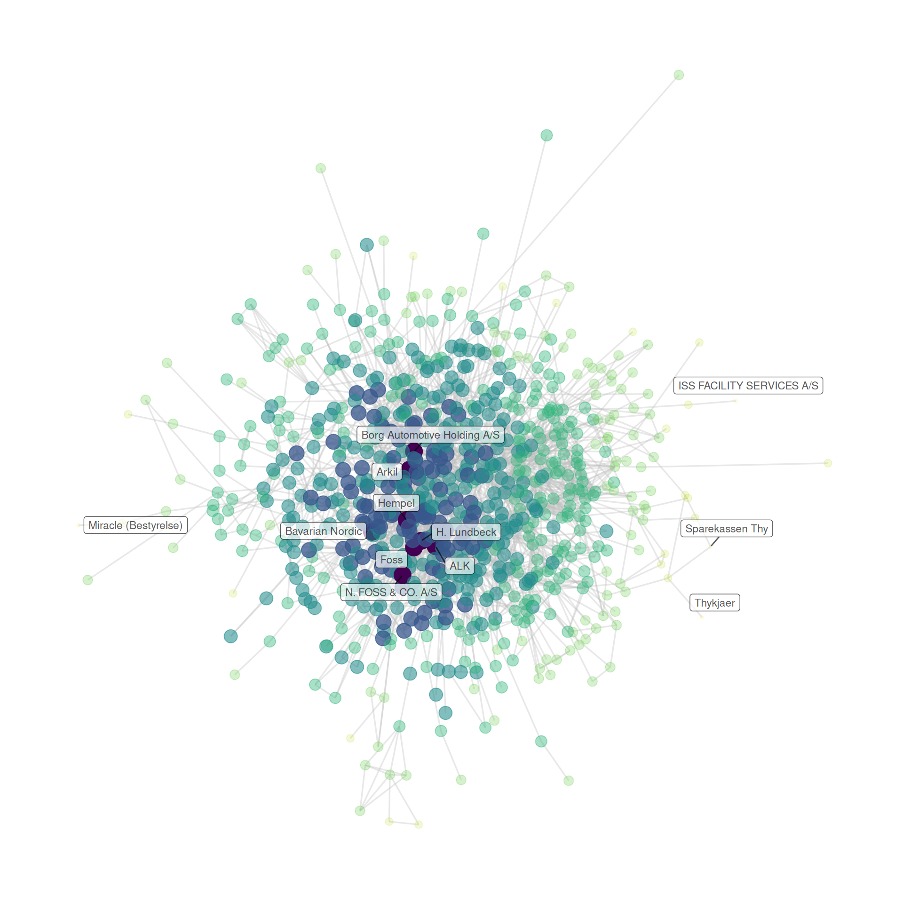
Visualisering af betweenness
largest_comp_virk %>% ggraph(layout='stress') +
geom_edge_link0(color='grey', width=0.6, alpha=0.35) +
geom_node_point(aes(color=betweenness, size = betweenness, alpha = betweenness), show.legend = F) +
theme_graph() + scale_color_viridis(direction = -1) + labs(color="Betweenness") +
geom_node_label(aes( filter=name %in% {cent_metrics_rnk %>% filter(betweenness_rnk <= 10) %>% pull(name)}, label=name), alpha=0.65, size = 3, repel=T, force = 20)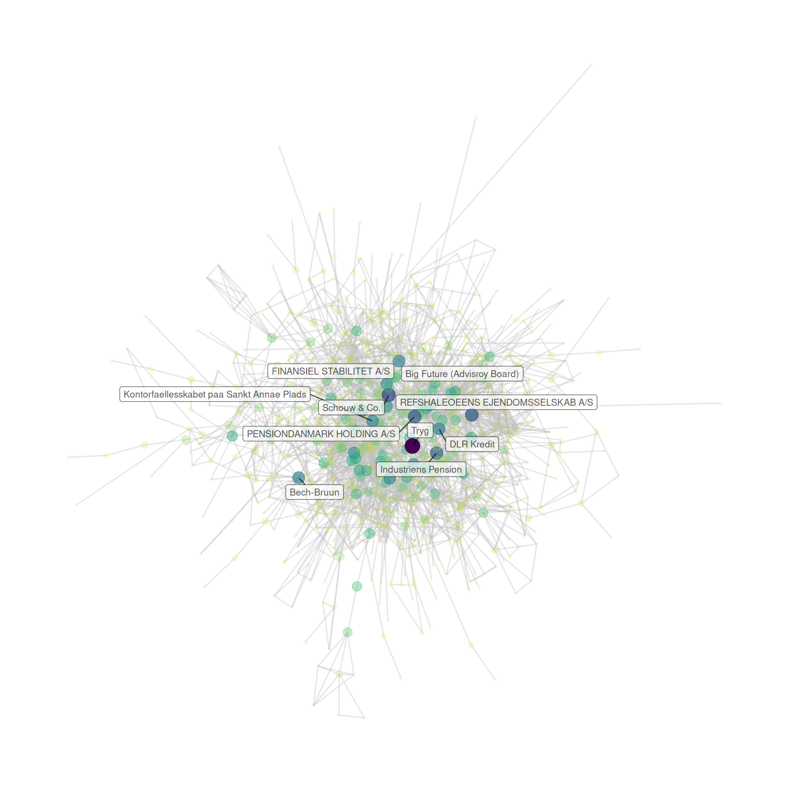
Visualisering af closeness
largest_comp_virk %>% ggraph(layout='stress') +
geom_edge_link0(color='grey', width=0.6, alpha=0.35) +
geom_node_point(aes(color=closeness, size = closeness, alpha = closeness), show.legend = F) +
theme_graph() + scale_color_viridis(direction = -1) +
labs(color="Closeness") +
geom_node_label(aes( filter=name %in% {cent_metrics_rnk %>% filter(closeness_rnk <= 10) %>% pull(name)}, label=name), alpha=0.65, repel=T,size=3, force = 20)Warning: ggrepel: 1 unlabeled data points (too many overlaps). Consider
increasing max.overlaps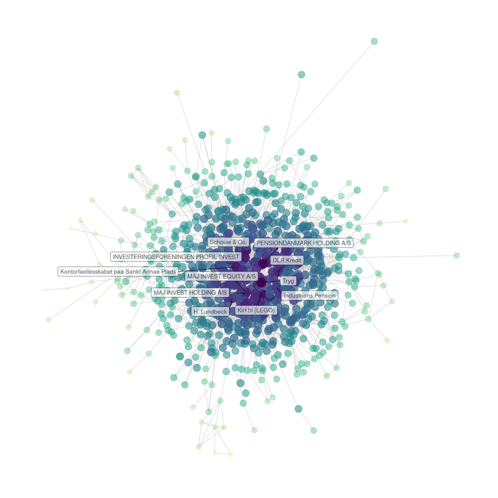
Centralisering:
Ide: Er centraliteten i netværket spredt ud eller koncentreret på få noder
Praksis: udregnes som “summen af differencen mellem centraliteten for den mest centrale node og de andre” divideret med “den teoretiske situation, hvor én node er central og alle andre perifære” For de fleste centralitetsmål er denne teoretiske situation stjernegrafen, som vi kiggede på tidligere.
Spørgsmålet bliver således, hvor tæt er vi på en situation, hvor én node ‘suger’ al centraliteten.
deg_cent <- centr_degree(largest_comp_virk)$centralization
deg_cent[1] 0.03020665clo_cent <- centr_clo(largest_comp_virk)$centralization
clo_cent [1] 0.1633791betw_cent <- centr_betw(largest_comp_virk)$centralization
betw_cent[1] 0.05391088eig_cent <- centr_eigen(largest_comp_virk)$centralization
eig_cent[1] 0.9397274stargr <- make_star(vcount(largest_comp_virk), mode = "undirected")
lay1 <- create_layout(largest_comp_virk, layout = "fr")
p0 <- stargr %>% ggraph(layout = "star") +
geom_edge_link0(edge_width = .1, edge_alpha = 0.4) +
geom_node_point(aes(size = degree(stargr), color = degree(stargr))) +
scale_size_continuous(range = c(.5,8)) +
guides(size = "none", color = "none", alpha = "none") +
labs(caption = paste0("Centralization = 1")) +
theme_graph()
p1 <- lay1 %>% ggraph() +
geom_edge_link0(edge_width = .1, edge_alpha = 0.4) +
geom_node_point(aes(size = degree, color = degree, alpha = degree)) +
scale_size_continuous(range = c(0.5, 6)) +
guides(size = "none", color = "none", alpha = "none") +
labs(caption = paste0("Degree centralization = ", round(deg_cent,2))) +
theme_graph()
p2 <- lay1 %>% ggraph() +
geom_edge_link0(edge_width = .1, edge_alpha = 0.4) +
geom_node_point(aes(size = betweenness, color = betweenness, alpha = betweenness)) +
scale_size_continuous(range = c(0.5, 6)) +
guides(size = "none", color = "none", alpha = "none") +
labs(caption = paste0("Betwenness centralization = ", round(betw_cent,2))) +
theme_graph()
p3 <- lay1 %>% ggraph() +
geom_edge_link0(edge_width = .1, edge_alpha = 0.4) +
geom_node_point(aes(size =eigencentrality, color = eigencentrality, alpha = eigencentrality)) +
scale_size_continuous(range = c(0.5, 6)) +
guides(size = "none", color = "none", alpha = "none") +
labs(caption = paste0("Eigencentrality centralization = ", round(eig_cent,2))) +
theme_graph()
ggarrange(plotlist = list(p0, p1, p2, p3)) %>% annotate_figure(., top = text_grob("Graph level centralization", family = "serif", size = 12, face = "bold"))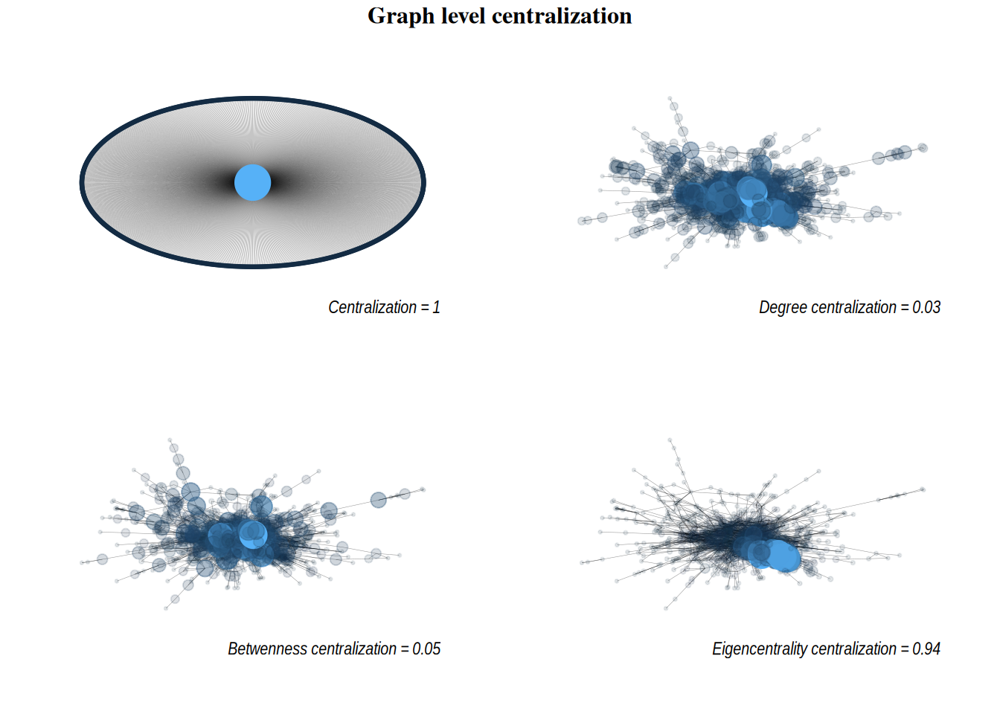
I kan downloade scriptet her Øvelser her Øvelser med svar her
Husk at lægge dem i scripts mappen i r-projektmappen